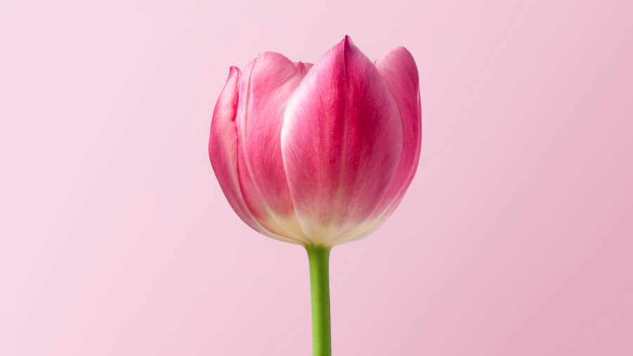

Розовое утро
от 3 900 ₽Розы, гербера, гвоздики. Тёплая нежность.
Цветочная мастерская
Немного сада в большом городе.
Живые линии, нежные оттенки
и цветы с характером.
Не нужен повод. Достаточно чувств.
Цветы под ваше настроение
Выберите композицию.
А детали оставьте своему настроению.
Розы, гербера, гвоздики. Тёплая нежность.
Розовые розы и лёгкое облако статицы.
Один цветок. Много смысла.
Это демонстрационный каталог. Цены условные, фотографии передают настроение и не фиксируют точный состав.

Красота — в живых несовершенствах.Идея мастерской
Тонкий изгиб стебля. Чуть раскрытый лепесток. Оттенок, который невозможно повторить. Нам близки цветы, в которых чувствуется природа.
«Тихий сад» — концепция маленькой цветочной мастерской. Здесь букет начинается с настроения, а упаковка лишь бережно его обрамляет.
Выбрать своё настроениеНесколько простых привычек,
чтобы заботиться о срезанных цветах.
Обновите срез стеблей острым чистым инструментом перед тем, как поставить цветы в воду.
Вымойте вазу, уберите листья ниже уровня воды и меняйте воду каждый день.
Выберите место вдали от батарей, прямого солнца и спелых фруктов.
Всё просто
Да. Нажмите «Выбрать композицию» и переключите размер. Цена пересчитается сразу. Для ириса можно выбрать один цветок, три или пять стеблей.
Фотографии в демокаталоге служат визуальным ориентиром. В реальной мастерской оттенки и доступные цветы зависят от сезона; любые замены нужно согласовывать до заказа.
Этот сайт — проект для портфолио. Реальных доставки и оплаты здесь нет. Можно настроить композицию и скачать свой выбор, чтобы попробовать весь сценарий без оформления заказа.
Без особого повода